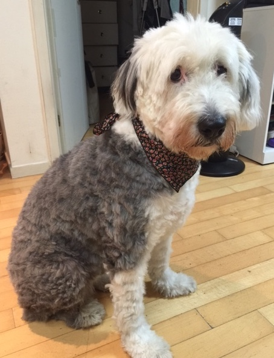

This is a website about Old English Sheepdogs, the fuzzy clowns of the canine world. Are you searching for a silly, curious, energetic companion? A dog that's as soft as a cloud? A pet that can cheer you up after a hard day? Look no further than the OES.
| Size | Color | Personality |
|---|---|---|
| puppy, 5 lbs | Black and white | Playful |
| Adult 60-85 lbs | Gray and Black | Curious and inquisitive |
For more information, talk to your local sheepdog!